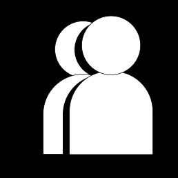
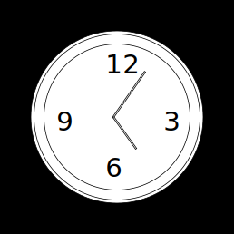

1. What’re the advantages or disadvantages of being a working student?
Plain and simple, I am doing it for the money. But more seriously, I need a more consistent flow of income given that I am back in the city in an apartment rather than back home like last semester. I have to pay all my bills and rent somehow and having a job really alleviates the stress so I don't keep digging into my savings.
2. How does this affect your
social life?

My social life really hasn't been affected because of my job. In all honesty, the amount of workload I get from my classes this semester is making it harder to go out. But even then, I am really close with my roommate and we make it work.
3.How do your parent/s or guardian/s feel about it?
Since my parents are helping pay for my share of the rent, they did expect me to get a job. Also, even without their pressure, I wanted to get a job to begin with.
4.How long have you been working?
I have been working since mid-August, around two weeks after I moved into the city. However, I have been working at a Starbucks since last October, I just transferred to one in the city.
5.Do you have any strategies for
time management?

As I said before, my job isn't too much of a time constraint given that I only work three times a week for a total of around 15-16 hours a week. I actually worked during the school year back home last semester and I was even picking up more shifts than I am now. But to keep myself on track, I plan out my week of all the assignments I have to do for school so I can spresad the workload.
6.Have youlearned anything on the job that’s informed your art
I work at Starbucks so the correlation to my art is slim, however, I have learned how to work and communicate with a variety of people. In addition, I learned to be patient and understand people function at all different levels. Given that I work in a field that often thrives in collaborative work, strong interpersonal skills are essential.
7.How did
COVID
affect your work-life-school balance?
Plain and simple, I am doing it for the money. But more seriously, I need a more consistent flow of income given that I am back in the city in an apartment rather than back home like last semester. I have to pay all my bills and rent somehow and having a job really alleviates the stress so I don't keep digging into my savings.
8.What do you usually do with your earnings?
Funny enough, I actually made a spreadsheet and planned out how I am going to divide my earnings. On that list was my rent, my bills, groceries, monthly subscriptions like Spotify, money for eating out -- or at least the ones I can remember. Whatever is left is my "fun" money.
9.Would you say the relationship you have with your coworkers versus classmates feel different?
My relationship with my coworkers is not that much different than my one with my classmates. If you look at it, my job is just another class I go to. I see and work with these people three times a week, and with all that time shared, we get very comfortable with each other. I actually made a good fiend at the Starbucks back home who came to visit me a couple weeks ago, she and I have gotten really close during the time we worked together.
10.Are there aspects of your identity (i.e. race/gender/religion) that’ve made your job more difficult?
Not as much when I worked at Starbucks, but I have gotten racist remarks before in previous jobs. When I worked at a local pet retail store, while I was still training I accidentally rang up someone incorrectly. I found out later on that the customer went to one of my coworkers and told them "You better watch out for that ethnic kid" I was just taken aback when I heard this information. But now, I have really experienced much adversity at work.